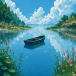
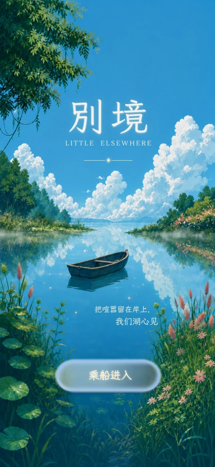
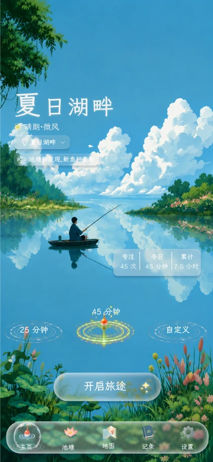
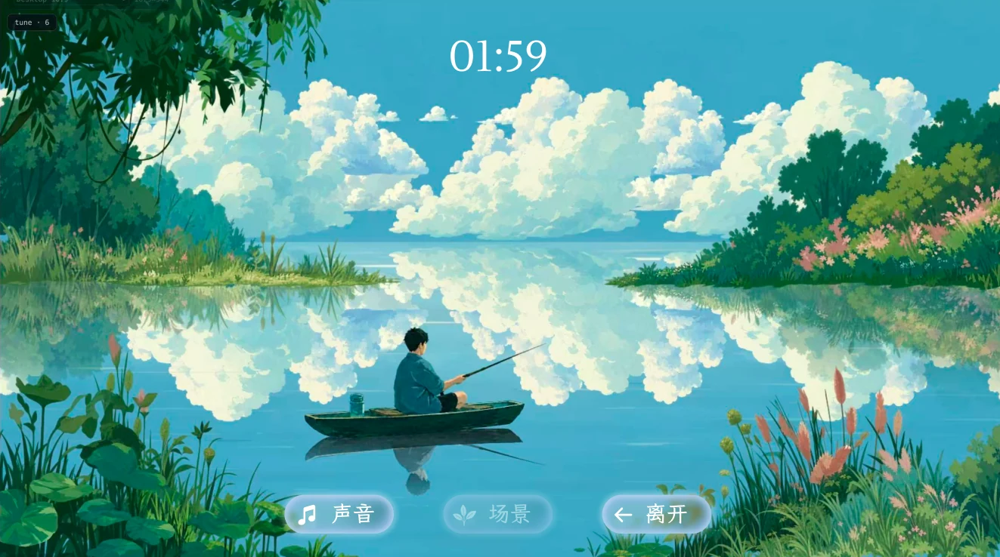
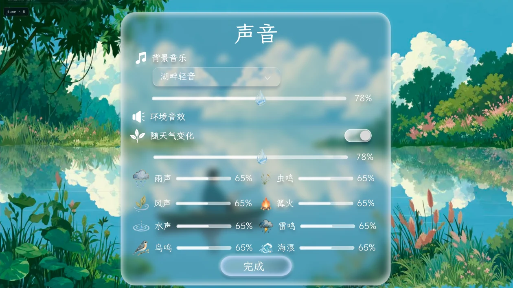
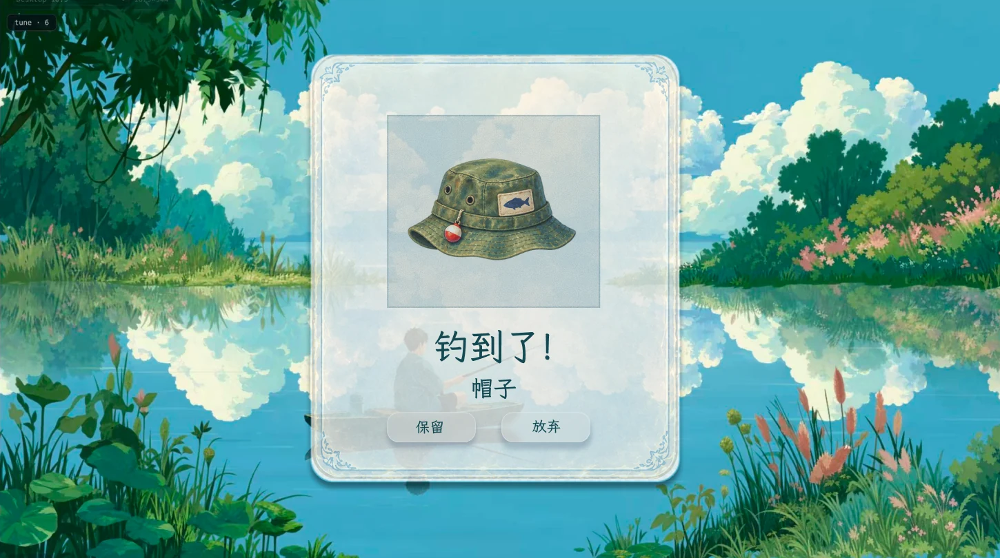

A QUIET FOCUS COMPANIONLittle
Elsewhere别境
一款安静的专注陪伴应用。
给日常一点别处。
A quiet focus companion where time spent focusing becomes a world to explore.
专注、垂钓，带回一点发现iOS 开发中 / In development · iOS
{kind=link}

{kind=link}

界面设计预览 / A glimpse of Little Elsewhere
FOCUS → AMBIENCE → CATCH → COLLECT
一段专注，
一次小小的发现。
留出一段时间 Choose a time
进入安静的风景，开始这一段专注。
Choose a duration and settle into an illustrated world.
在喜欢的声音里停留 Stay for a while
调配水声、风声、雨声与鸟鸣，让声景陪你。
Mix water, wind, rain and birds into your own quiet ambience.
专注之后，抛出鱼线 Finish your focus
完成专注，看看这一次会钓到什么。
When the session ends, cast your line and see what finds you.
留下你的发现 Keep what you find
鱼、装备和奇妙的小物件，慢慢成为你的别境。
Fish, equipment and unexpected objects become part of your collection.
01 湖上时光 FOCUS
眼前是事情，
心里有一片湖。
把这段时间交给专注。小舟停在云与水之间，倒计时静静走过，让风景陪你把眼前的事情慢慢做好。
Stay somewhere else for a while. Choose how long you want to focus, then let the world quietly move around you.
{kind=link}

02 自己的声景 AMBIENCE
让这片风景，
听起来像你喜欢的样子。
雨声轻一点，水声近一点。混合喜欢的自然声音，为自己留一个可以安心停留的地方。
Make the world sound like yours. Mix ambient sounds to create a place that helps you settle in.

03 带回一点惊喜 CATCH
认真度过的时间，
有了小小的回响。
完成一段专注，就可以抛出鱼线。也许是一位湖中来客，也许是别的小惊喜。留下喜欢的收获，让这段时间有迹可循。
Focus. Fish. Discover. Finish a session, cast your line, and see what finds its way to you.
A SMALL SURPRISE
水面之下，
不只有鱼。
鱼、贝壳、装备，还有一些意想不到的小物件。比如，这顶不知从哪里漂来的帽子。
Not everything under the water is a fish. Shells, equipment, strange objects and small surprises can find their way onto your line, too.

04 留下发现 COLLECT
让点滴收获，
慢慢住进你的别境。
收集遇见的鱼、装备和小物件。每一段投入的时间，都为自己的小世界添一点新意。
Keep your little discoveries. Your collection slowly grows alongside the time you spend focusing.
YOUR LITTLE ELSEWHERE GROWS QUIETLY WITH YOU
一点时间，一点收获。
一个慢慢生长的小世界。
一次专注，换来一次垂钓；一点收获，汇成自己的收藏。
A focus session becomes a catch. A catch becomes a collection.
And, slowly, a small world begins to grow.
Little Elsewhere · 别境
正在为 iOS 开发中 / Currently in development for iOS.
本页展示开发中的界面设计，画面与功能以正式发布版本为准。
Design previews of a work in progress. Visuals and features may change before release.